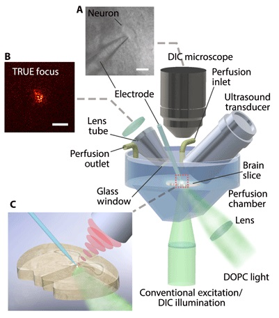

Publication
Author info
*: first, †: corresponding (If not specified, first is the first, corresponding is the last)
2020
"Deep tissue space-gated microscopy via acousto-optic interaction"M. Jang*, H. Ko*, W.K. Lee, J.S. Lee, W. Choi Nat. Commun. 11, 710 | 2020 |
||
"Deep optical imaging within complex scattering media"S. Yoon, M. Kim, M. Jang, Y. Choi, W. Choi, S. Kang , W. Choi Nat. Rev. Phys. 2, 141 | 2020 |
||
"Time-gated iterative phase conjugation for efficient light energy delivery in scattering media"D.Y. Kim, S. Jeong, M. Jang, Y.R. Lee, and W. Choi Opt. Express 28, 7382 | 2020 |
||
Prior to KAIST
"Wavefront shaping with disorder-engineered metasurfaces"M. Jang*, Y. Horie*, A. Shibukawa*, J. Brake, Y. Liu, S. M. Kamali, A. Arbabi, H. Ruan, A. Faraon, C. Yang Nat. Photonics 12, 84 | 2018 |
||
|  |
"Deep tissue optical focusing and optogenetic modulation with time-reversed ultrasonically encoded light"H. Ruan*, J. Brake*, J. E. Robinson, Y. Liu, M. Jang, C. Xiao, C. Zhou, V. Gradinaru, C. Yang Sci. Adv. 3, 12, eaao5020 | 2017 |
|
"Optical phase conjugation with less than a photon per degree of freedom"M. Jang, C. Yang, I. M. Vellekoop Phys. Rev. Lett. 118, 93902 | 2017 |
||
"Optical phase conjugation with less than a photon per degree of freedom"J. Ryu, M. Jang*, T.J. Eom, C. Yang, E Chung Sci. Rep. 6, 23494 | 2016 |
||
"Analyzing the relationship between decorrelation time and tissue thickness in acute rat brain slices using multispeckle diffusing wave spectroscopy"J. Brake*, M. Jang*, C. Yang JOSA A 33, 270 | 2016 |
||
"Optical focusing inside scattering media with time-reversed ultrasound microbubble encoded light"H. Ruan*, M. Jang*, C. Yang Nat. Commun. 6, 8968 | 2015 |
||
"Focusing through dynamic tissue with millisecond digital optical phase conjugation"D. Wang*, E. H. Zhou*, J. Brake, H. Ruan, M. Jang, C. Yang Optica 2, 728 | 2015 |
||
"Relation between speckle decorrelation and optical phase conjugation (OPC)-based turbidity suppression through dynamic scattering media: a study on in vivo mouse skin"M. Jang*, H. Ruan*, I. M. Vellekoop, B. Judkewitz, E. Chung, C. Yang Biomed. Opt. Express 6, 72 | 2015 |
||
"Iterative time-reversed ultrasonically encoded light focusing in backscattering mode"H. Ruan*, M. Jang*, B. Judkewitz, C. Yang Sci. Rep. 4, 7156 | 2014 |
||
"Method for auto-alignment of digital optical phase conjugation systems based on digital propagation"M. Jang*, H. Ruan*, H. Zhou, B. Judkewitz, C. Yang Opt. Express 22, 14054 | 2014 |
||
"Model for estimating the penetration depth limit of the time-reversed ultrasonically encoded optical focusing technique"M. Jang, H. Ruan, B. Judkewitz, C. Yang Opt. Express 22, 5787 | 2014 |
||
"Optical phase conjugation (OPC)-assisted isotropic focusing"M. Jang, A. Sentenac, C. Yang Opt. Express 21, 8781 | 2013 |
||
| [Google Scholar] | ||